EngramEdit：通过条件记忆解耦大模型事实更新
本文精读 EngramEdit: Decoupled Knowledge Updates in LLMs through Conditional Memory，作者为 Hongru Cai、Ran Wei、Wenjie Wang、Chengfa Wu、Ning Song、Yongqi Li 和 Wenjie Li。第一作者来自香港理工大学，合作机构包括杭州迪安基因科技与中国科学技术大学。论文于 2026 年 10 月 7 日发布 arXiv v1，PDF 首页的稿件日期标注为 10 月 8 日，研究主题是通过预训练条件记忆、在保持骨干参数固定的情况下更新大模型事实知识。
论文入口为 arXiv:2610.10533，本轮访问核验日期为 2026 年 10 月 9 日。官方代码 ModalityDance/EngramEdit 已确认包含实现和实验目录，本轮未执行模型复现。以下笔记依据完整主文与附录区分方法机制、实验成绩与适用限制。
同一事实的不同表达可能激活不同的词片段记忆，而更新共享的片段嵌入又可能意外改变模型对其他事实的预测。
1. 背景和问题
作者并没有从“模型需要长期记忆”这种宽泛目标出发，而是研究一个可检验的参数接口：模型已经预训练了按局部词片段索引的条件记忆，能否只改这部分向量，把某个事实替换成新事实，同时尽量保存其他知识与通用计算能力。
传统大模型事实编辑面对的张力在于，知识通常没有一个独立、干净的存储位置。把某人的雇主由实验室甲改为实验室乙，直接微调模型或修改前馈层输出权重，都可能触及同时服务大量其他输入的参数。模型能在原始问题上输出新答案，尚不足以说明更新完成：换一种提问方式可能又得到旧答案，涉及该事实的多跳问题也可能失败。更严格的更新要求同时覆盖原始请求、未见表达、组合使用和无关输入四个方面。
条件记忆提供了不同的架构前提。输入到达一个位置时，模型取结束于当前位置的二元、三元、四元等连续词片段，查表获得学习过的嵌入，再把这些局部表示交给骨干网络处理。记忆表扩展了参数容量，但每个位置只访问少量条目，因此不必按照全部参数量增加计算。这里的“条件”是输入决定访问哪些条目，并不意味着记忆可以由用户以自然语言任意寻址，也不意味着每条事实恰好对应一条记忆。
这一区别决定了知识编辑的难度。事实是语义对象，查表键是表面词片段。以某人的雇主为例，原始表达和改写表达可能共享一个包含人名的短片段，却在关系描述处使用不同词语；相同的人名还可能出现在出生地、教育经历或其他关系的问题中。因此，同一事实对应的访问路径不是固定的单个参数，不同事实的访问路径也不是互斥的。如果忽略这个映射结构，单次更新看似局部，实际影响范围可能很广。
引言将风险区分为三个具体维度。编辑有效性关心多个事实是否争用共享参数，导致一个更新破坏另一个更新；表达泛化关心未见提问是否能访问已更新的条目；特异性关心无关问题是否误用更新后的共享条目。这三个维度对应不同失败原因，不能只靠降低学习率一并解决。过度限制更新会使新知识写不进去，扩大更新范围会提高表达覆盖，却可能牺牲无关知识保存，所以需要一个同时考虑访问关系与更新代价的分配机制。
论文沿用了先定位表示、再写入参数的编辑思路。先找到一种内部表示变化，让固定模型预测目标答案；再把这项变化分配给真正可以持久修改的参数。过去这个接口经常是前馈网络输出矩阵，本文改为词片段嵌入表。重要变化不是把梯度优化搬到一个更小的表，而是利用表中向量的共享关系，对所有表达联合求解，避免逐个表达分别编辑时的参数覆盖和目标冲突。
“骨干固定”也要准确理解。它指事实写入阶段不修改骨干参数，并不表示推理时骨干状态保持不变。更新过的嵌入仍会影响后续隐状态和最终生成；这正是知识生效的必要路径。由此带来的收益是可以把持久更新限制在预先存在的记忆接口，把计算网络保留在原来的参数状态；由此带来的局限则是无关能力仍可能经由输入表示的变化受到影响。参数隔离提供了工程边界，尚不能替代行为层面的保存性验证。
作者把原始条件记忆的关闭实验当作动机：在先前 Engram 研究中，关闭记忆对事实任务造成的相对损失，比对其他任务更大。这支持记忆与骨干具有不同功能侧重，但并不能证明所有事实都单独储存在记忆里，也不能证明推理完全位于骨干。本文真正补充的证据，是在保持骨干参数固定的情况下，写入记忆向量可以显著提高新事实的预测成功率，并且移除与该事实相关的更新会使成功回答失效。
另一个需要提前限定的条件是，实验使用的是 LongCat-Flash-Lite。标题和方法讨论面向条件记忆架构，图示借用了 Engram 的动机，但并没有在所有带条件记忆的大模型上完成同等规模验证。特别是加法融合能给出明确的线性更新关系，带上下文门控、卷积或上游状态依赖的融合则需要改写匹配关系。把本文简单归纳为“任何大模型都能增量更新外置记忆”会跳过预训练接口和聚合方式这两个关键条件。
这篇工作值得关注，还因为它把模型更新问题从单纯的优化问题转成了约束分配问题。同一事实的多个表达都需要目标表示变化，同一个向量又可能被多个表达使用；求解器要找到一组嵌入变化，使整体尽量接近所有目标，同时把常用向量的变化压得更小。由此可以具体分析哪些请求互相冲突、哪些改写没有覆盖访问键、哪些无关输入容易受到更新影响，而不是仅凭一次微调损失判断知识是否成功写入。
对研究者而言，本文的价值在于形成一个较完整的证据链：原始提问成功、未见改写成功、多跳推理能用、顺序编辑保持、无关查询退化分析，以及禁用更新的干预实验各自回答一类问题。对工程者而言，价值是明确了可操作的更新边界和潜在审计对象。不过，从研究基准迁移到真实知识维护时，还必须额外考虑事实来源可信度、同一主体的关系冲突、撤销更新、版本切换与高频写入成本；这些是本文结论之外的系统工作，不能由高编辑成功率直接推得。
最后，评测中的目标事实多为人为构造的反事实。编辑有效意味着模型按照请求给出了指定答案，不意味着该答案符合现实。论文也在伦理声明中特别说明这一点。因此，在阅读后续实验数字时，应把“新事实”理解为基准给定的更新目标，把“保存知识”理解为特定无关查询上的行为保持。这一口径有助于同时看清方法的技术进步和现实使用所需的额外核验。
2. 方法
2.1 条件记忆目标计算
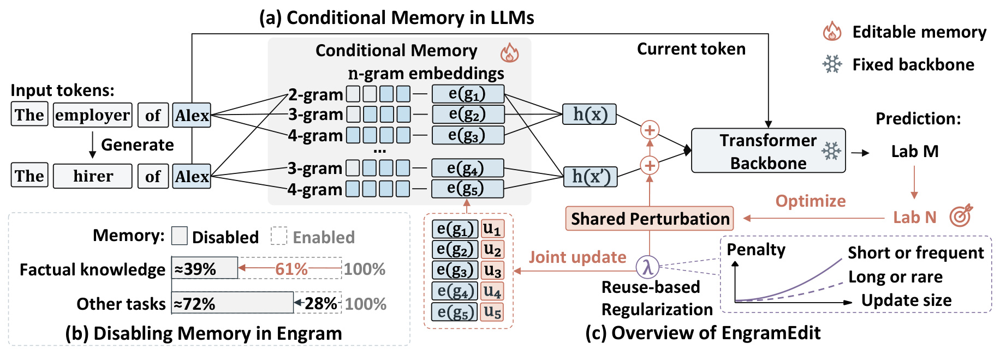
Figure 1 的左上部分说明了一个词位置如何根据多个长度的局部片段查表，记忆表示随后进入固定骨干。左下部分是先前 Engram 关闭记忆实验的相对性能示意，事实任务剩余约百分之三十九、其他任务剩余约百分之七十二，它属于架构动机，不能当作本文编辑实验的新结果。右侧则画出本文真正的写入方式：同一事实的不同表达共享一个临时扰动，以新答案监督该扰动，再把变化分配给底层嵌入。两个不同表达可以共享短片段，也可以使用各自独有的长片段；复用惩罚希望把更多变化分配给后者，减少对广泛使用条目的影响。图中骨干的固定标识表示参数冻结，输入记忆变化仍然会通过骨干传播并改变输出。 给定输入序列，作者先定义结束于目标位置的片段集合，再用架构特定的聚合函数得到记忆表示。原文式三概括为：
符号解释：这里，输入为词序列，目标位置为主体最后一个词元，片段集合包含指定长度且结束于该位置的连续片段；嵌入函数返回查表向量，聚合函数把这些向量转换为交给骨干的表示。聚合可以是加法，也可以依赖骨干上下文进行门控。这个定义特意保留架构差异，后面的闭式求解只在满足线性聚合关系时直接成立。
对每个编辑请求，模型先生成语义等价的若干表达，并把原始提示保留在集合中。生成规则强调尽可能改变主体之前的局部措辞，因为主体结束位置的左侧片段决定了查表键。仅修改主体之后的句子，可能增加自然语言多样性却完全不扩展记忆访问范围。提示同时禁止出现旧答案和新答案，避免改写表达直接泄漏目标；也要求主体占位符只出现一次，使定位主体最后词元更明确。默认生成四个表达，加上原始提示共形成五个目标计算输入。 在这些表达的记忆表示上添加同一个可学习扰动。原文式四的优化目标是：
符号解释：其中，编辑编号对应一个主体关系请求，表达集合包含原提示与生成改写，目标对象是请求指定的新答案，带扰动的模型仅在选定位置临时注入向量。负对数似然使目标答案更容易生成，正则项限制扰动和主体描述预测的变化，截断系数约束扰动范数。所有模型参数在这一步固定，只有扰动接受梯度，因此它学习的是“当前表示需要怎样改变”，尚未写入任何持久记忆条目。 附录式二十一给出了目标正则的实际形式：
符号解释：两种预测分布分别来自有扰动和无扰动的主体描述保留提示，两个系数控制分布保持与范数代价。注意分子是扰动的二范数，分母是原始记忆表示范数的平方，应按原式理解，不能随意改成常见的平方范数正则。主体描述提示只能约束一部分行为，也不等于覆盖所有无关事实。优化结束后，原文式五为每个表达构造目标：
符号解释：星号表示期望写入后的目标，不同表达保留各自的原始表示，但共享同一个变化向量。共享扰动迫使多种表达共同决定变化方向，避免为每个说法单独学习一个互不协调的目标。它同样存在能力边界：若不同表达在当前骨干上需要不兼容的方向，优化只能折中。因此，后续高泛化效果是实证结果，并不是共享扰动形式本身保证了所有语义改写都能成功。
2.2 多表达记忆映射
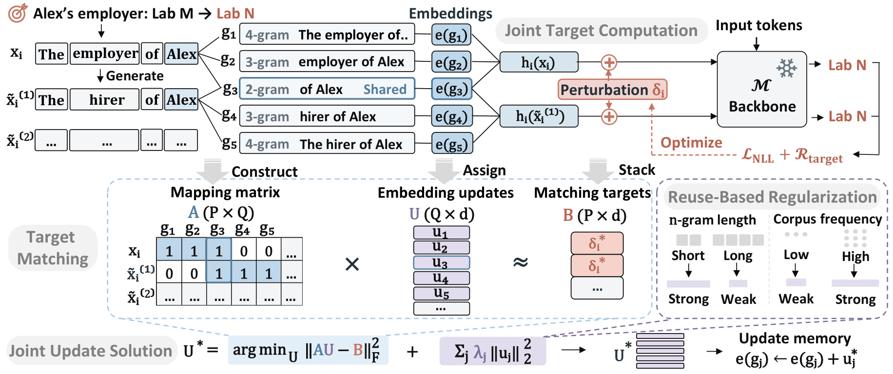
Figure 2 按原文方法顺序连接三个阶段。顶部先生成不同说法，得到对应的片段嵌入和临时目标；中间把表达作为矩阵的行，把去重后的记忆条目作为列，把所需表示变化放入目标矩阵；底部求解所有条目的更新，然后写回表中。蓝色共享列揭示了为什么不能按表达依次覆盖参数：两个表达同时使用这一列，就必须接受同一个更新向量。右侧的长度与频率惩罚提供了分配偏好，使共享频繁的列承担较小变化。图中的矩阵乘积只是加法聚合下的目标匹配，不是用一个新网络替代骨干，也不是对所有词表条目进行密集微调。
每个表达只取主体末词元处被激活的片段，先求同一事实不同表达的并集，再求整个批次的并集，重复的片段仅保留一个列。这样可以同时处理表达内共享和事实间共享。设批次总共有若干表达、若干不同片段，记忆维度固定，那么映射矩阵的行数是表达总数、列数是去重片段数。原文式六定义每一个元素：
符号解释：这里，行编号对应某个编辑与表达组合，列编号对应一个不同片段，指示函数在该表达激活该片段时取一，否则取零。矩阵记录的是访问关系，既不是语义相似度，也不是梯度大小。把相同片段合并成一个列之后，求解器不会为它分配多份互相覆盖的更新；反过来，若两个请求的可编辑片段集合完全相同，矩阵两行也可能相同，此时要求它们产生不同表示变化通常无法精确满足。 映射的输出包括访问矩阵、片段集合和对应目标变化。在加法聚合下，表达的记忆变化等于它激活的嵌入变化之和，原文式七写为：
符号解释：不同片段总数由列数表示，每个更新向量与记忆表示同维。把更新向量按行堆叠得到更新矩阵，把每行的目标变化堆叠得到目标矩阵，就得到整体近似匹配关系。近似号有实质含义：共享参数可能导致目标互相冲突，而正则也可能主动放弃一部分目标精度来降低副作用。附录证明，只有目标矩阵每一列都落在访问矩阵的列空间中，才可能精确匹配；即使精确匹配可行，带正则的最优解也未必选择它。
2.3 带复用惩罚的联合记忆更新
频繁激活的嵌入会参与更多无关查询，作者对这些条目分配更高的更新代价。长度和语料频率只是访问概率的代理：短片段通常更容易共享，出现频率高的片段更可能再次被无关输入使用。原文式八把复用惩罚与均匀岭惩罚合并：
符号解释：对角矩阵给每个片段一个惩罚系数，复用系数缩放不同条目的权重，岭系数为所有条目增加统一代价。要求每个对角项为正，可使后面的正规方程正定。并不是有了均匀岭惩罚就自动获得局部性；区别在于复用权重将更新预算按照无关输入的使用风险进行重分配。 附录式二十九进一步规定权重构造：
符号解释：片段长度对应一个随长度增加而下降的系数；频率百分位在同长度片段内部计算，强度系数和指数控制频率惩罚曲线，两个上限防止权重过大。减去一使频率项变成长度权重之上的增量。不同长度的语料出现次数天然不在同一尺度上，所以使用同长度百分位比直接把原始次数相加更合理，不过训练语料频率仍未必等于真实业务查询中的访问概率。 在此基础上，原文式九联合求解：
符号解释：更新矩阵包含所有持久嵌入变化，访问矩阵将它们组合成每个表达的实际变化，目标矩阵提供期望变化，第一项衡量匹配误差，第二项衡量带权更新成本。联合求解的核心是一个共享片段只获得一份更新，但这份更新必须同时考虑所有使用它的表达。频繁条目会因为更高代价而被限制，独有或稀有条目则可以承担较多变化，前提是它们确实出现在相关访问路径中。 原文式十给出唯一解：
符号解释：转置矩阵把表达约束汇聚到片段空间，正则对角项使系统可逆；实际实现应求解线性系统，而不必显式构造逆矩阵。求解结束后把每行向量加到相应记忆嵌入，随后移除临时扰动。推理只按原有输入片段查表，不需要再生成改写或重新优化；更新是否生效取决于输入前缀是否触发相关条目。顺序编辑则基于上次更新后的当前模型重新计算目标，不能把最初模型的目标无限复用。
理论保存界约束的是无关输入上的平均平方记忆表示变化，证明用到每个条目的激活概率和每个位置最多激活的条目数，而不需要条目间独立。它为频率惩罚提供了方向性依据，但没有给出最终答案不变的硬保证。输出分布对表示的敏感性、长序列传播和任务差异仍由骨干决定。对带上下文门控的架构，作者在附录给出非线性匹配目标及局部雅可比近似；如果上游查询也被更新影响，必须一起重新计算。因此，闭式公式不能原样搬到任意带门控的条件记忆系统。
计算边界同样清晰：构建稀疏正规方程依赖表达数量、每行片段数和表示维度，密集求解具有片段数的立方时间项与平方存储项。若共享图可分成互不连接的表达群，可以分块求解而保持联合解不变。论文没有把表达生成、扰动梯度计算或线性求解宣布为免费，也没有给出完整在线时延证据。高频知识维护需要进一步检查共享规模增长、频率统计成本和批次规划，而不是仅根据“只更新记忆”推断服务成本很低。
实现中，LongCat-Flash-Lite 的总参数为六百八十五亿，其中三百一十四亿位于片段嵌入。每个长度使用四个哈希子表，每个子表输出二百五十六维向量，经固定投影进入三千零七十二维空间，再与原始词嵌入平均融合。实际编辑保存的是按精确词元序列索引的额外累积向量，预训练哈希表、词嵌入和投影层保持固定；因此不同片段的哈希碰撞不会把额外更新强行绑在一起。这是逻辑嵌入更新与实现存储之间的重要区别。目标扰动在首个解码块之前加入，最多用二十五步优化，并读取末层输出概率；频率统计来自英语维基百科快照，联合线性系统以单精度直接求解。这些条件来自附录第二十九至三十页，应在迁移或复现时与模型检查点一起记录。
3. 实验结果
3.1 编辑、表达泛化与多跳使用
所有实验使用 LongCat-Flash-Lite，主表在 CounterFact 和 ZsRE 上分别进行两千次顺序编辑，按批次写入。有效性衡量原始提示能否输出目标答案，泛化衡量未参加编辑的改写表达，特异性衡量无关查询，综合效用是前三项的算术平均。CounterFact 另测流畅度和一致性。比较对象包括完整微调、受约束微调、AdaLoRA、UnKE、MoEEdit，以及只微调主体位置或所有词位置激活记忆的两种基线。这些比较区分了接口收益、表达覆盖收益与联合分配收益。
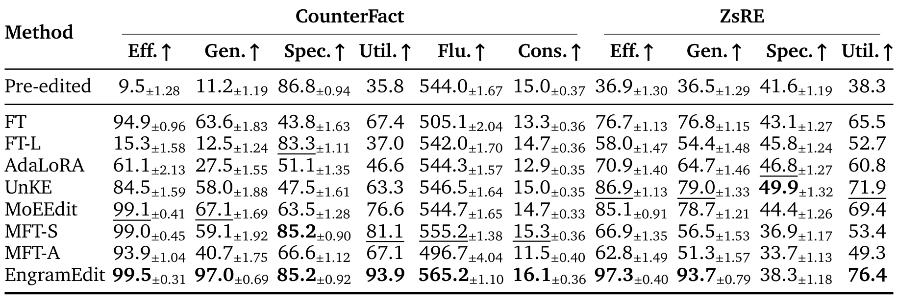
Table 1 中 EngramEdit 在 CounterFact 的有效性为百分之九十九点五、泛化为百分之九十七、特异性为百分之八十五点二，综合效用为九十三点九；ZsRE 则分别为九十七点三、九十三点七、三十八点三和七十六点四。重要差异是，主体位置记忆微调在 CounterFact 的有效性同样达到九十九，但泛化仅五十九点一。可见把记忆条目改到能回答原问题，远不足以让改写表达用上更新。与此同时，CounterFact 编辑前特异性为八十六点八，ZsRE 为四十一点六，编辑后的两个指标都下降；主表没有证明保存性全面提高，综合效用领先主要来自编辑成功与泛化的明显改善。此外，流畅度和一致性是 CounterFact 的生成评估，不应与前三项百分比成绩直接求平均。预编辑模型对人为新答案的低成功率只是编辑前参照，并不表示它原来的世界知识只有同样低的准确率。两种记忆微调基线分别改变主体位置和全部位置，后者的特异性与生成质量更低，提示扩大可写范围会使损失更容易影响无关输入。阅读这张表时应先比较相同接口的编辑器，再检查跨表达泛化与保存性是否同时满足目标，而不能只挑每行最大的一个分数。
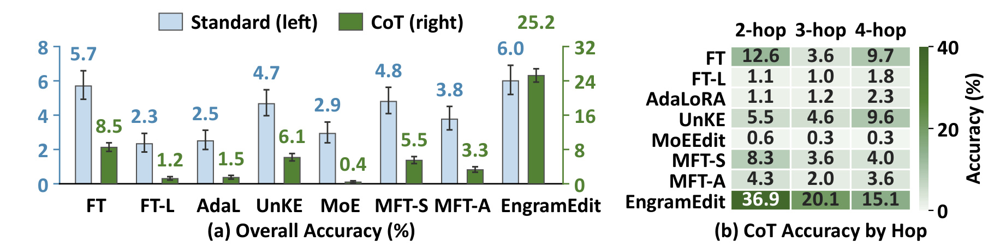
Figure 3 给出三千个多跳案例。直接回答时，EngramEdit 总准确率约百分之六，与完整微调的五点七相近；使用思维链时提高到二十五点二，而最强基线完整微调为八点五。摘要中的“接近三倍”是二十五点二相对八点五，必须保留思维链提示这一条件。左图两类柱子使用不同纵轴，读图时不能按高度直接比较标准提示和思维链的数值。更深问题的改善说明中间表达能够激活更新记忆，但总准确率仍然较低，不应把相对倍数转述为可靠完成一般推理。这里的标准提示要求模型直接产生答案，思维链提示允许先显式写出中间事实。二者改变了知识访问路径，因此成绩差异同时反映编辑器与提示形式的配合。作者认为中间步骤能激活相关片段，从而把新知识送入下一步推理，这与后面的禁用实验相互支持；但图本身没有逐步标注每个成功案例的记忆访问，不能把所有提升都归因于某一个确定的中间词片段。公平比较仍须维持相同问题集合、提示协议和答案判定方式。
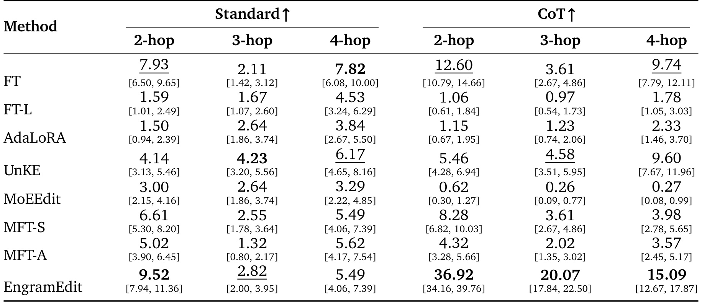
Table 4 更精确地列出各深度结果：思维链下二跳、三跳、四跳准确率分别为百分之三十六点九二、二十点零七、十五点零九；标准提示下分别为九点五二、二点八二、五点四九。三种深度案例数为一千一百三十五、一千一百三十六、七百二十九，因此总体准确率不是三列的简单平均。四跳相对最佳基线九点七四的优势明显小于二跳，提示长链仍有知识访问和组合错误的累积。表中方括号为 Wilson 百分之九十五置信区间，不能把这些区间与主表的置信半宽混为同一统计表达。表中标准提示下不同跳数组的最佳编辑器并不相同，完整微调在四跳组比本文方法更高，而本文方法的优势集中于思维链下。这使结论具有清楚的使用条件：知识接口的更新成功与推理提示能否有效访问它，需要联合评估。各方法在同一跳数组上使用相同案例，故组内横向比较更直接；跨组比较还受到问题难度和样本数量变化的影响。置信区间反映该组答案成功比例的不确定性，不能用单次组内最高分宣称所有更长问题都已泛化。
3.2 保存性与顺序编辑的边界
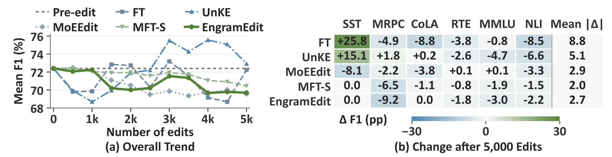
Figure 4 在五千次 CounterFact 编辑过程中测试六项通用任务。作者报告最终平均任务分数保留编辑前的百分之九十六以上，但右侧逐任务变化显示 MRPC 下降九点二个百分点，RTE 下降一点八，MMLU 下降三点零，NLI 下降二点二，SST 与 CoLA 基本不变。这说明平均保持较好并不表示所有能力稳定。MRPC 需要比较两个句子的语义等价性，不同句子激活不同片段可能让局部更新不对称地改变表示。作者只在每项任务上取一百个例子，故这一结果应作为能力保持的有限样本证据，不能升级为大规模综合评测结论。右侧最后一列平均绝对变化衡量各任务偏移幅度，方向为正的提升也会计入，所以它与左侧平均分的下降不是同一指标。例如完整微调在情感任务提升，却在语法与推断任务损失，平均分可能掩盖这种重分配。主体位置记忆微调的绝对变化较小，但前面的主结果说明其知识泛化明显不足，不能仅凭能力保持认定它更适合更新。需要同时判断新知识可用性与旧任务变化；本文方法提供了一种折中，并没有在每个维度支配所有基线。
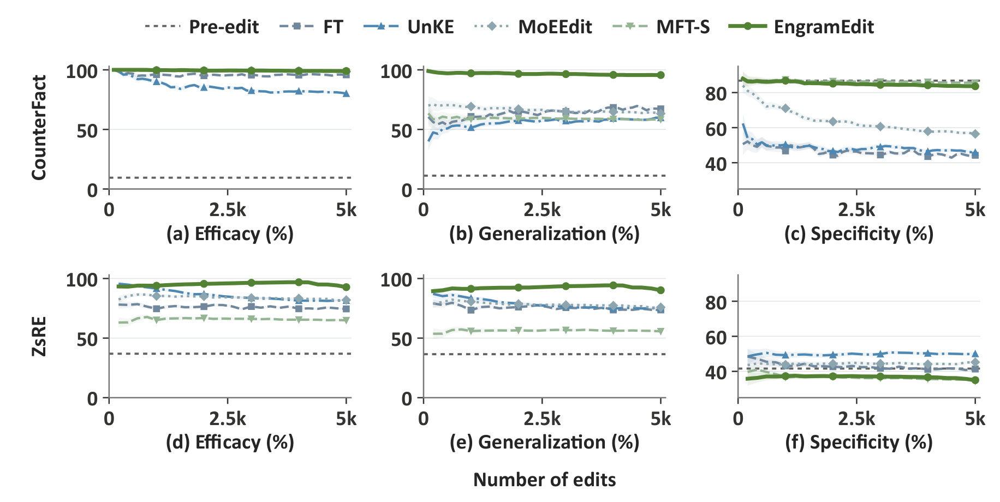
Figure 7 扩展到五千次更新，以阴影展示逐案例置信区间。CounterFact 的有效性与泛化维持高位，相比同样使用记忆接口的主体位置微调，主要优势仍体现在泛化；ZsRE 的趋势也显示跨表达访问保持较好。但无关知识曲线并未全面超过编辑前基线，特别是 ZsRE 的特异性长期处于较低水平。因此，顺序编辑证据支持在这组规模和顺序下没有快速崩溃，同时仍存在保存性损失。它没有验证无限次数更新，也没有覆盖真实事实冲突、反复修订同一主体或周期性回滚等更复杂更新流。每次轨迹评估覆盖已经写入的所有历史请求，而不只评估最近一批，因此后期高有效性包含旧更新仍可访问的证据。相邻检查点并非独立样本，不能把阴影和曲线平稳误读为连续多次独立复现实验。图的两个数据集具有不同编辑前特异性和评价方式，跨数据集的纵轴数值不适宜简单相减。更有意义的是分别对照每个数据集的预编辑基线，检查编辑数量增加后泛化优势是否持续，以及保存损失是否出现明显累积。
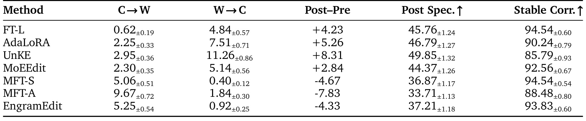
Table 5 专门拆开保存性指标。这个表来自五千次运行的前两千次编辑，与主表的两千次运行不同，EngramEdit 的编辑后特异性是三十七点二一，不能拿它替换主表三十八点三。正确转错误的比例为百分之五点二五，错误转正确为零点九二，净变化为负四点三三个百分点；正确性状态保持率为九十三点八三。状态保持包含“仍然错误”，不等于正确答案保留率。作者另报告按案例加权的初始正确预测保留约百分之八十七点四。其他基线较高的特异性既包含更少正确答案退化，也包含更多旧错误被修正，不能用“只是修正了错误”抹去它们在保存上的优势。正确到错误与错误到正确比例先在每个案例内部计算，再对案例等权平均，避免邻居提示更多的案例在总分中占更大权重。因此表内百分比不应直接乘全部提示数量来推导错误数。状态保持允许原本错误的预测继续错误，甚至不同错误答案之间切换，所以它不是逐词输出稳定度。保存目标若要求旧正确答案不被破坏，应单列初始正确保留率；若要求所有输出不变，还要追加分布或文本一致性测量，这张表只能回答正确性状态层面的变化。
3.3 联合分配、表达和正则消融
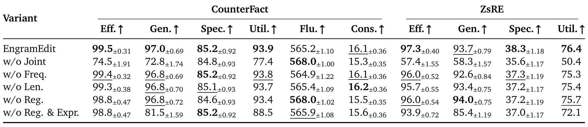
Table 2 中去掉联合分配后，CounterFact 的有效性从九十九点五降到七十四点五、泛化从九十七降到七十二点八；ZsRE 则从九十七点三降到五十七点四、从九十三点七降到五十八点三。这是最强的组件证据，说明独立处理共享条目会造成明显冲突。移除频率或长度权重对 CounterFact 影响较小，在 ZsRE 上综合效用分别降到七十五点三与七十五点四，不能把它们描述成同等规模的贡献。去掉复用正则再去掉表达，泛化进一步下降，表明表达覆盖与更新分配承担不同功能。部分去正则配置的泛化略高而特异性更低，也体现了目标之间的权衡。移除联合分配是按每个表达独立解更新，其失败来源与单纯少生成改写不同：共享条目在多个独立目标之间失去统一协调。频率权重和长度权重的消融则仍保留联合系统，主要改变各列承担变化的代价，因而成绩下降较温和。流畅度并没有随着每项消融都下降，说明编辑质量具有多维权衡，不能把所有组件概括为对全部指标一致增益。比较这些行时应保持两千编辑、表达数量与其他设置一致，才能把差异归于列出的设计选择。
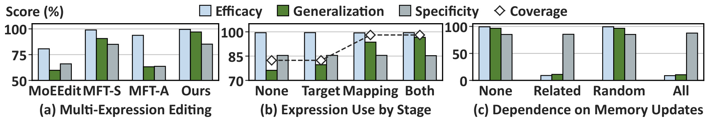
Figure 5(a) 让不同编辑器使用相同的生成表达，EngramEdit 仍在类似有效性与特异性下获得更好泛化，排除了“只是多看了一些改写”这一简单解释。子图(b) 将表达分别用于目标计算和记忆映射，扩展映射增加了未见改写对更新条目的覆盖，承担大部分泛化收益；目标计算进一步提高成功率，但不改变访问覆盖。子图(c) 是实际干预：禁用当前事实相关更新让有效性与泛化大幅降低，随机禁用匹配数量与长度的其他更新则几乎不变。原始嵌入始终保留，所以测的是更新贡献而非关闭整个记忆组件。覆盖率定义的是未见改写是否激活该事实的更新嵌入，覆盖并不保证访问到的向量已产生正确答案。子图中映射单独扩展和两阶段同时使用表达的覆盖接近，却有不同泛化成功率，恰好显示访问与有效写入不能混为一谈。禁用对照是在同一个已编辑模型上进行，并在每个评估后恢复更新，不是重新训练几个模型。它减少了模型检查点差异这一混杂因素，但匹配随机条目仍可能有不同更新大小，因此结论应限定为事实相关更新具有显著贡献。
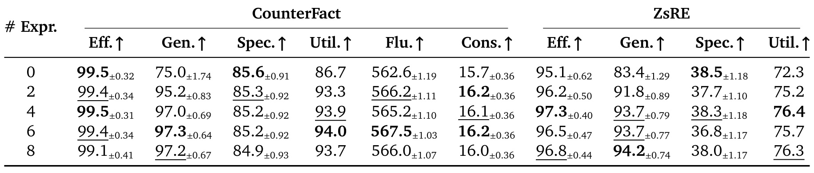
Table 7 的表达数量不包括原始提示。CounterFact 不生成改写时泛化为百分之七十五，加两个表达升到九十五点二，四个达到九十七；六个和八个仅到九十七点三与九十七点二。ZsRE 从八十三点四升到九十一点八与九十三点七，更多表达没有持续提高综合效用。四个表达是成本与效果折中，并不是普遍最优常数。相同事实的新说法若依旧访问原有片段，增加数量也未必带来覆盖增量；真正需要关注的是改写质量和新增有效访问路径，而非表达条目数本身。有效性在表达数改变时总体维持高位，主要增益集中于未见改写，符合生成表达用于扩展访问键的设计目标。流畅度和一致性随表达数只有小幅变化，没有表现为增加表达必然提高文本质量。六个表达在 CounterFact 综合效用略高，四个在 ZsRE 更好，因此默认四个体现跨任务和处理成本的选择，不能只摘取某个最高数字宣称更少或更多一定更好。若实际生成的表达语义漂移，新加入的映射行甚至可能引入错误目标，需要先核验表达保持原关系。
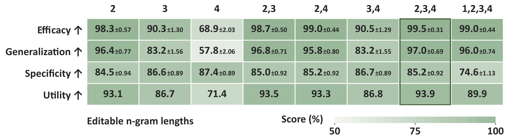
Figure 9 展示短片段与长片段的两种作用。单独编辑二元片段泛化为九十六点四，单独编辑四元片段只有五十七点八，但后者的特异性较高；长片段更有上下文特异性，却不容易被不同说法共同激活。组合二、三、四元片段达到九十七点零泛化和八十五点二特异性。额外允许单词嵌入更新后，特异性降到七十四点六，同时有效性和泛化没有进一步提高。这直接支持本文排除单词更新的默认选择，也说明“更大的可编辑范围”并不必然得到更好的知识维护结果。同一事实在短片段上的高访问覆盖，有时是长片段不可替代的；但高频短片段也更容易被其他关系问题触发。二、三、四元组合让这些不同自由度共同承担目标变化，正则可以把变化分配给更局部的条目。这里没有单独改变每个长度的更新预算，所以不能把每一列差异解释为长度的纯因果效应，组合还改变了可用参数和共享结构。最右列清楚表明加入单词参数并未带来净收益，至少在当前设置中，限制写入接口比无条件扩大接口更合理。
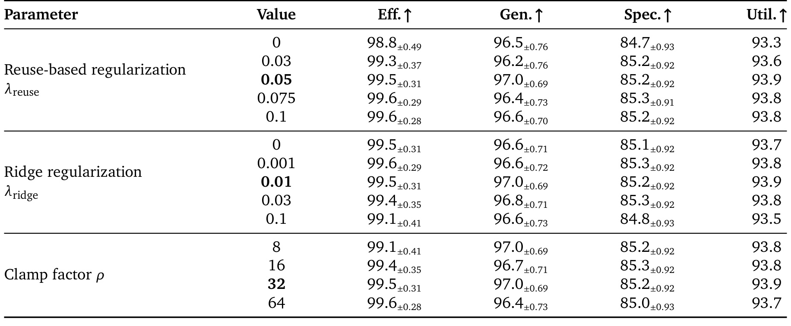
Table 8 只改变列出的单个参数，其余设置保持默认。在测试范围内，非零复用系数一般比完全去除该项有更好的有效性、特异性与效用；岭系数从零到零点一、截断系数从八到六十四的结果整体变化较小。默认复用系数零点零五、岭系数零点零一、截断系数三十二属于经过比较的工作点，不应从有限范围的平稳表现推断所有模型都不需要调参。单变量敏感性也没有测试参数之间的交互，或者共享规模显著增大时的稳定性。本文主要证明没有依赖一个极窄的取值才能成功，而非免除了迁移时的参数检查。岭项为所有条目增加均匀代价，复用项则保留长度和频率的区别，两者在表中分别扫描；岭系数为零仍可由正的复用项维持正规系统可解。截断因子扩大只允许扰动更大，并不强迫优化器选择更大范数，因为预测损失和目标正则仍在起作用。因而截断范围中的平稳表现，不能推导为可以取消目标计算的限制。表内置信半宽提示小幅分数差异可能不足以支持强排序结论，迁移时仍应依据目标匹配与保存性联合选择工作点。
3.4 记忆访问与共享冲突
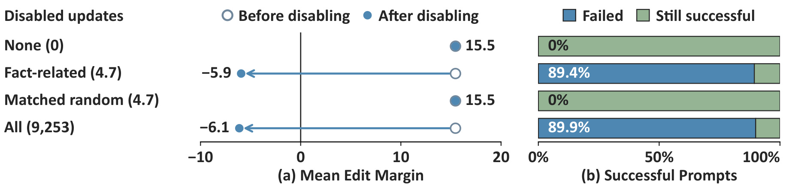
Figure 10 将新旧答案的长度归一化对数似然差当作编辑边际，正值偏向新答案。禁用事实相关更新后，平均边际从约十五点五变为负五点九，在原本成功的五千八百五十个提示中，有五千二百二十八个失效，约百分之八十九点四。平均只禁用四点六七九个相关更新，效果已接近禁用全部九千二百五十三个更新；数量与长度匹配的随机禁用没有导致成功提示失效。这是局部更新支持事实召回的有力证据，但随机对照没有匹配更新范数或语料频率，不能声称它完全控制了所有条目属性。编辑边际比较的是同一个提示下新答案与旧答案的相对偏好，不是新答案绝对概率，也不是自由生成文本的准确率。分母只包含禁用前已经成功的提示，未成功提示不会因为这一图被算作退化，故其百分比不能直接替换主结果的泛化分数。事实相关集合由编辑时选中的片段界定，一个共享条目的更新还可能包含其他请求贡献，因此禁用它删除的未必只是一份单独事实变化。这个细节进一步说明干预支持相关接口的必要作用，但不能把更新向量完全解释成互相独立的事实记录。
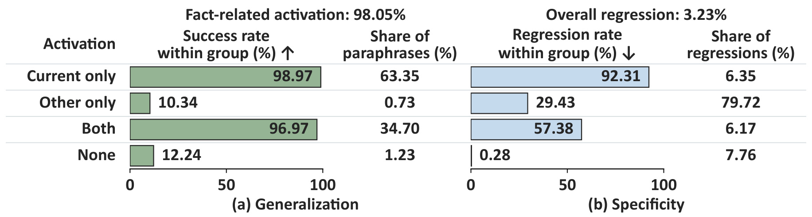
Figure 11 在所有更新保持启用时，按照提示激活当前事实、其他事实、两者或完全不激活更新进行分组。百分之九十八点零五的未见改写激活了相关更新，这些组的成功率接近百分之九十七至九十九；其余仅约百分之二的提示却贡献约一半泛化失败。无关查询中，初始正确的一万七千五百三十四个提示有百分之三点二三退化，其他事实更新激活组贡献了百分之七十九点七二的全部退化。这里左图组内成功率与右图组内退化率的分母不同，不能横向比较成一个统一风险分数；分组结果是关联分析，干预证据仍应回到禁用实验。左图的当前组与两者组共同构成相关访问覆盖，后者说明同一输入可以同时接触不同请求更新；这并不自动意味着失败，因为联合分配可以在部分共享情形下协调目标。右图当前组退化率很高但只贡献少量总退化，源于该组初始正确提示的规模较小，不能忽略分组基数。完全不激活更新的组仍有少量退化，作者讨论了有限精度导致近似答案排序翻转的可能性。因此，激活标签解释了大量副作用分布，却不是对每一个无关预测变化的充分解释。
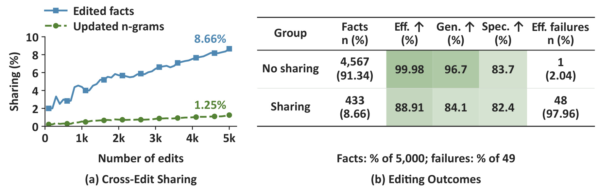
Figure 12 给出五千次编辑末尾的共享统计：只有二万二千七百七十八个更新片段中的二百八十五个发生跨编辑共享，占百分之一点二五，但涉及四百三十三个事实，占百分之八点六六。没有共享的事实有效性达到九十九点九八，存在共享的事实只有八十八点九一；四十九个有效性失败中四十八个落在共享组，约百分之九十七点九六。少量共享条目影响多个请求，因此片段级低共享比例不能代替事实级冲突比例。这与联合求解的理论可行性条件一致，却仍是观察关系：共享组可能同时具有其他更难编辑的属性，不能由分组表单独证明共享是所有失败的唯一原因。
这几类实验合在一起，形成了较细的机制解释：表达生成拓宽可访问条目，联合目标提高多表达下的方向一致性，联合分配处理共享参数，复用正则限制对无关输入常用条目的变化；最终更新在被相关输入激活时参与预测。每一环都能对应一个独立可测量指标，因而比只报告总体编辑成功率更有信息。但论文没有给出完整在线更新时延或高并发服务吞吐表，效率结论只能讨论求解复杂度和稀疏访问前提，不能报告未测量的加速比例。
4. 总结
EngramEdit 将预训练条件记忆变成一个可进行事实更新的参数接口。最值得保留的技术结论，是把同一事实的多种表达先统一到目标表示变化，再用访问矩阵把这些目标联合分配给共享片段嵌入。长度和频率正则不是孤立的防过拟合技巧，而是与查表复用风险相对应的更新代价。本文的强证据来自高表达泛化、联合分配的大幅消融差距，以及移除少量事实相关更新就能使新事实召回失效的干预结果。
结论的适用范围有四个明确限制。第一，主要实证集中在一个具备条件记忆的骨干，不能假定无条件记忆模型、不同模型尺度或门控架构都具有相同效果。第二，特异性在两个主数据集上都没有超过编辑前水平，通用能力平均保持也伴随 MRPC 明显退化；“大体保存”必须保留具体损失。第三，多跳近三倍收益限定于思维链提示，四跳准确率仍约百分之十五，无法说明一般推理任务已经可靠。第四，理论界针对表示变化的均值，不对事实正确性、输出完全不变或所有单个无关请求作出保证。
还有两个与长期维护直接相关的边界。共享条目会让多个请求竞争同一更新自由度，五千次实验中的失败高度集中于共享事实，说明小比例参数共享也可能形成显著请求风险。顺序编辑基于当前模型重算目标，但没有系统比较事实反复修订、互相矛盾的新旧请求和撤销操作。与此同时，反事实基准验证的是服从编辑目标的能力，真实系统还需要先证明请求内容可信；一个高效编辑器同样可能高效写入错误信息。
可执行的后续研究至少有三条。其一，复现时保留同一批编辑请求与未见表达，分别记录原始成功、跨表达成功、初始正确到错误、错误到正确，以及分任务能力变化，避免综合均值掩盖保存损失。其二，主动构造主体、关系措辞和片段共享程度可控的冲突集，比较批次联合、跨批次顺序、重复修订与回滚，测量共享图增长时哪些目标不再可行。其三，把加法融合与实际门控记忆分别测试，比较直接非线性优化和局部雅可比近似，并检查近似误差怎样影响新知识写入与无关行为。
工程层面的探索应从访问诊断开始。对每个更新请求记录它覆盖的片段、这些片段的频率与共享关系、目标匹配残差和更新范数，能够帮助定位失败来自访问缺失还是参数争用。若要把这种接口用于产品事实、实体属性或局部个性化知识维护，仍须先验证模型确实拥有适合的条件记忆表示，再建立更新授权、版本和行为验收机制。这些属于本文启发出的实现建议，并非论文已经部署并验证的功能。
最后值得关注的是评测方式的变化。保存性不是一个更高的无关查询准确率就能概括，表达泛化也不是生成了更多改写就能自动获得。本文通过正确性转换和访问分组把这两者拆开，让失败原因更具体。后续工作若同时交付更新成本、共享冲突压力测试和真实事实版本流，才能进一步判断这种可编辑记忆接口是否足以支持持续知识维护。当前结果已经说明固定骨干条件下的事实更新具有可行性，同时留下了清楚、可检验的扩展路径。